Do que trata o artigo
A adoção da inteligência artificial na administração pública exige servidores que queiram aprender e usar essas ferramentas, mas pouco se sabe sobre quais condições organizacionais favorecem essa disposição. O estudo mapeia a literatura sobre os fatores organizacionais associados à intenção, à adoção e à aprendizagem de IA por servidores públicos, com atenção ao propósito, ao tipo de vínculo e à produção brasileira.
Trata-se de uma revisão de escopo, conduzida conforme o Joanna Briggs Institute e relatada segundo o PRISMA-ScR. Na síntese preliminar, 50 estudos de 2020 a 2026 mostraram que regras claras, acesso a ferramentas, treinamento e apoio de chefias e pares costumam se associar ao uso e à intenção, com resultados mistos. Quase nenhum estudo tem a intenção de aprender IA como desfecho, mede o tempo protegido ou a segurança para experimentar, distingue o tipo de vínculo ou trata o propósito como fator, e a produção brasileira é mínima.
Esta é uma síntese preliminar: 13 dos 50 estudos foram lidos em texto completo e os demais por resumo, e as buscas em Scopus, Web of Science, SciELO, Spell e BDTD ainda não foram feitas.
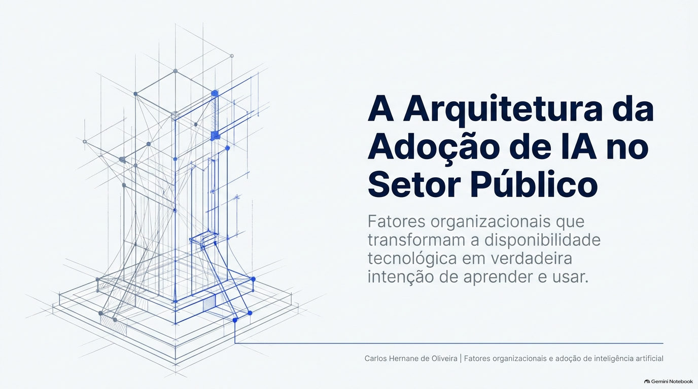
Pergunta e objetivos
Pergunta de pesquisa
Que fatores organizacionais a literatura associa à intenção, à adoção e à aprendizagem de IA por servidores públicos, e que lacunas existem, em especial no contexto brasileiro?
Cinco objetivos específicos
- Identificar os fatores organizacionais estudados e a direção das associações.
- Descrever os referenciais teóricos e a forma como os construtos foram medidos.
- Verificar se os estudos consideram o propósito ou a motivação para o serviço público e o tipo de vínculo.
- Identificar a produção brasileira e as lacunas em relação à internacional e aos documentos oficiais.
- Propor um modelo conceitual e hipóteses para um estudo empírico posterior.
A expectativa normativa e o descompasso
Os documentos orientadores tratam a capacitação como condição da adoção, mas a formação real não acompanha.
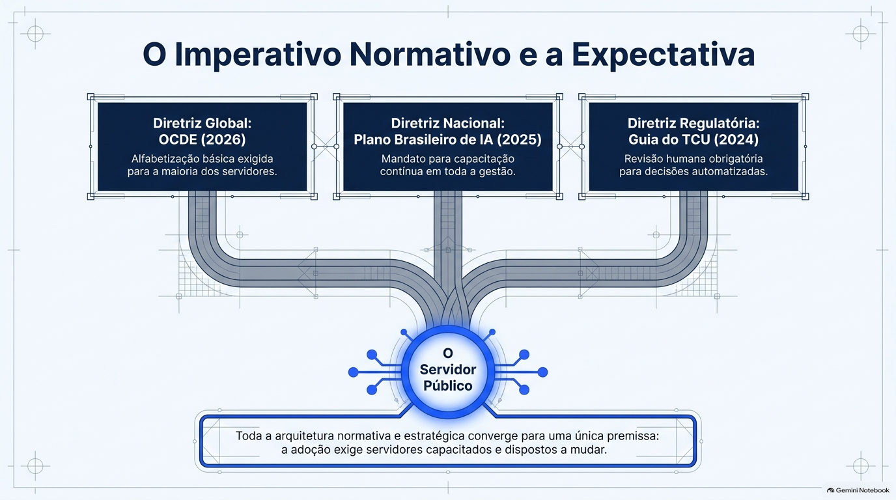
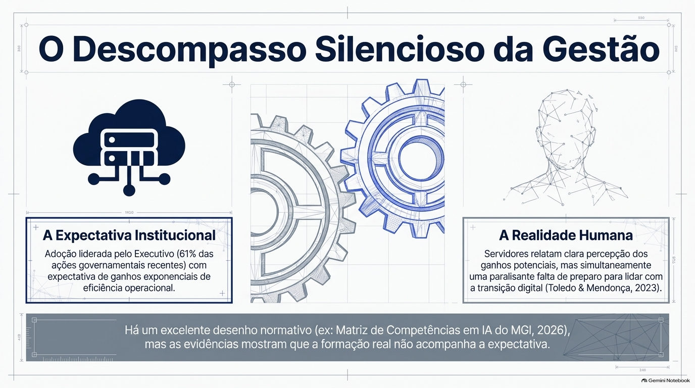
Em uma análise de 200 casos de uso em 11 funções centrais de governo, a OCDE (2025) constatou que a IA é prioridade para a maioria dos governos, mas que os esforços ainda não são sistemáticos, e que todos os casos podem trazer algum tipo de risco quando não são desenhados e usados de forma confiável.
O Plano Brasileiro de Inteligência Artificial afirma que os servidores precisam ser capacitados de forma contínua. A Matriz de Competências em IA propõe perfis e níveis de proficiência para orientar trilhas de aprendizagem. O guia do Tribunal de Contas da União orienta que decisões automatizadas por IA generativa não sejam adotadas sem revisão humana. A OCDE (2026) acrescenta que a maior parte dos servidores precisará de alfabetização básica em IA.
A OCDE (2019) identificou, no setor público federal brasileiro, lacunas percebidas em competências de inovação e indícios de que o acesso a treinamento para desenvolvê-las era desconhecido ou inexistente.
Um levantamento com servidores e empregados públicos registrou percepção de ganhos de eficiência e, ao mesmo tempo, falta de preparo para as mudanças digitais, embora os autores advirtam que a amostra é pequena e os resultados não são generalizáveis (Toledo e Mendonça, 2023). Um estudo documental sobre 311 documentos governamentais mostrou crescimento das ações de IA, lideradas pelo Poder Executivo (61%), seguido do Legislativo (21%) e do Judiciário (18%) (Alcântara, Oliveira e Moraes, 2026).
Em uma pesquisa com 12.562 servidores do Cazaquistão, cerca de nove em cada dez não usavam IA ou nunca a tinham tentado. A posição de gestão e o acesso a ferramentas digitais associaram-se ao uso, e o maior tempo de serviço, negativamente (Daueshova et al., 2026). Em 129 servidores marroquinos, os mais jovens eram mais abertos à IA e mais de 40% apontaram a falta de competências digitais como barreira (Barodi e Lalaoui, 2025).
Essas evidências estão dispersas entre administração pública, sistemas de informação, gestão de pessoas e educação corporativa, e usam termos diferentes, como adoção, aceitação, intenção e prontidão.
Usar não é o mesmo que aprender
A literatura mede sobretudo a intenção de usar. A de aprender quase não aparece.
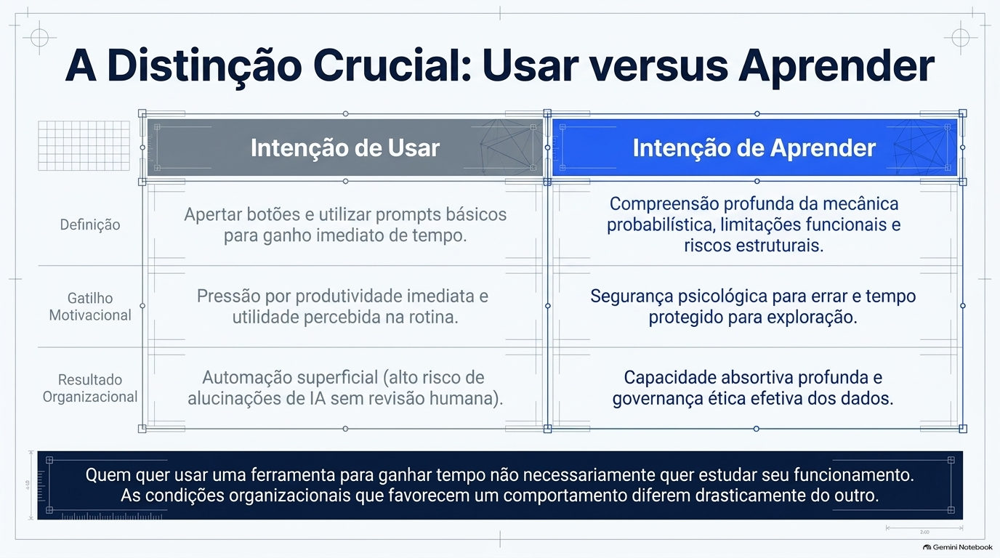
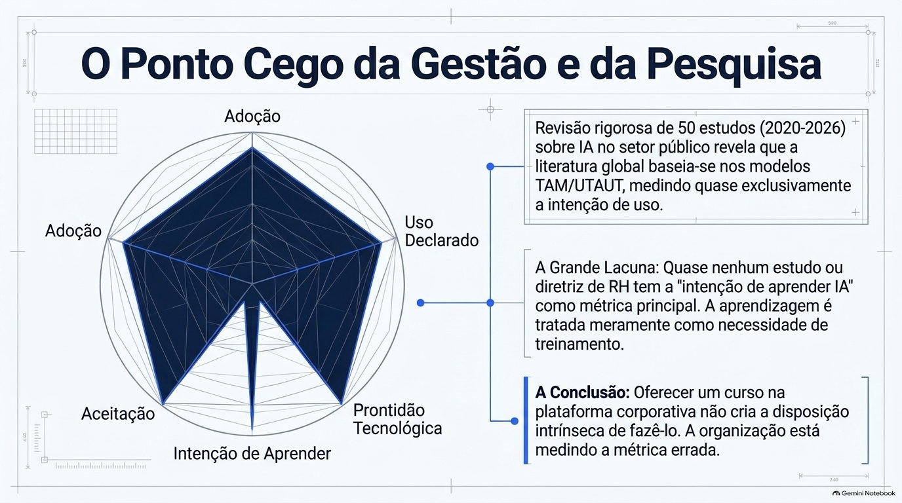
A revisão trata intenção, adoção, uso e aprendizagem como desfechos relacionados e distintos. Quem pretende usar uma ferramenta não necessariamente pretende estudá-la, e as condições que favorecem uma e outra podem diferir.
A teoria unificada de aceitação e uso de tecnologia (UTAUT) reúne expectativa de desempenho, expectativa de esforço, influência social e condições facilitadoras como determinantes da intenção e do uso (Venkatesh et al., 2003).
Na síntese preliminar de 50 estudos de 2020 a 2026, predominam os desenhos de corte transversal (survey) e os referenciais TOE (16 estudos), TAM (11) e UTAUT (9). O desfecho mais frequente é a intenção ou a disposição de adotar IA, seguida do uso declarado e da prontidão.
Entre os estudos com servidores, nenhum tem a intenção de aprender IA como desfecho principal. A aprendizagem aparece como necessidade de treinamento, como barreira ou como efeito de um curso.
A frase final do slide, de que a organização estaria medindo a métrica errada, é uma leitura do autor a partir do mapa, e não um resultado da revisão.
Quatro pilares e o que a literatura indica
O que os estudos mostram sobre regras, apoio, tempo e acesso, e segurança para experimentar.
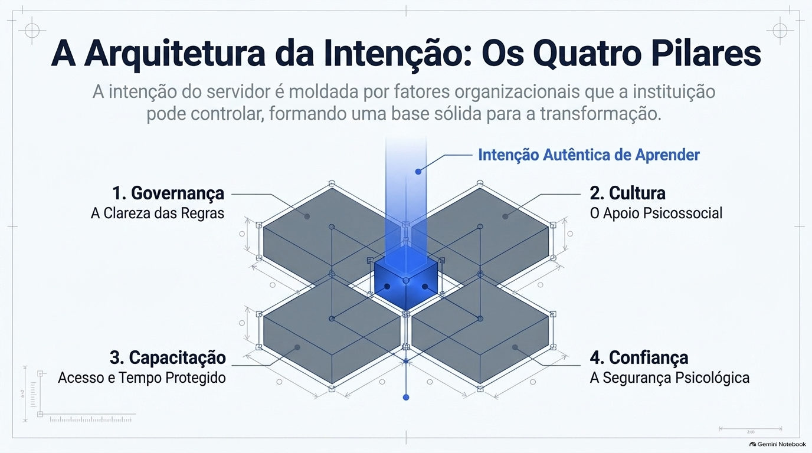
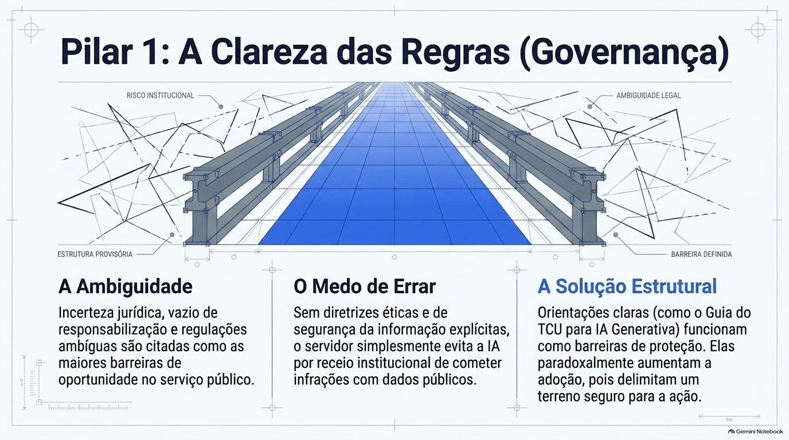
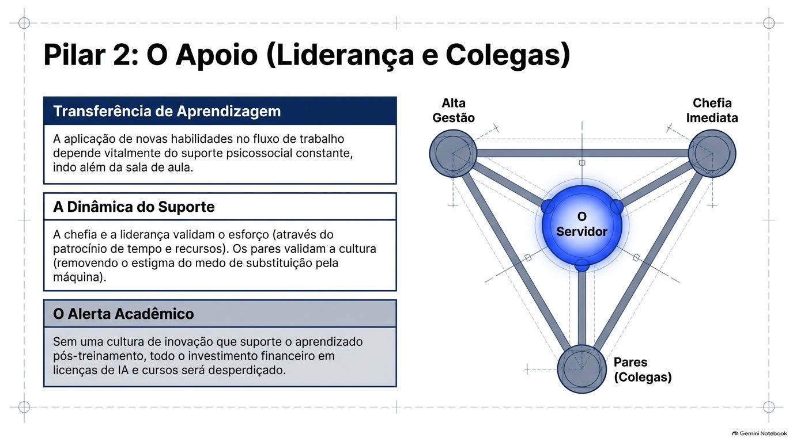
Barreiras percebidas por servidores que não usavam IA (média de 0 a 3)
Pulkkinen (2026a): organização pública de saúde e assistência social da Finlândia, 236 respondentes não usuários, taxa de resposta de 10,3%.
É um levantamento de uma única organização, e o tempo para aprender aparece como a barreira de menor média entre as sete, mas ainda assim relevante.
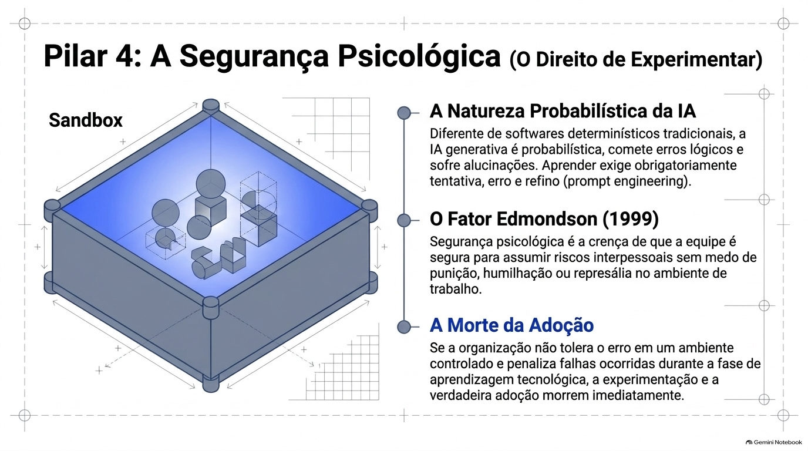
Servidores municipais finlandeses deram mais valor à orientação ética e de segurança da informação, e a falta de diretrizes organizacionais teve média de 2,2 em 3 entre as barreiras de servidores que não usavam IA (Pulkkinen, 2026a, 2026b). Especialistas suíços incluíram diretrizes claras entre as medidas prioritárias (Stübi, 2026).
Incerteza jurídica, vazio de responsabilização e regulação ambígua aparecem como barreiras na Áustria e no Vietnã (Eibl et al., 2026; Duy et al., 2026). O apoio regulatório foi significativo em estudos do Kuwait e de municípios europeus (Al Wael et al., 2023; Mikalef et al., 2021, lidos pelo resumo).
Servidores finlandeses em cargos de supervisão usaram mais IA (70% contra 40%), e a falta de apoio dos pares teve média de 2,0 em 3 entre as barreiras (Pulkkinen, 2026a). No Cazaquistão, o cargo de gestão associou-se ao uso (Daueshova et al., 2026), e na Suíça dar o exemplo foi uma das medidas priorizadas (Stübi, 2026).
Os resultados não são uniformes: o apoio da liderança não foi significativo em um estudo dos Emirados Árabes (Al-Kaabi et al., 2025), e a influência social foi ambivalente em Dubai (Blaique et al., 2026), ambos lidos pelo resumo.
Na literatura brasileira de treinamento, o suporte psicossocial é preditor da transferência da aprendizagem para o trabalho (Abbad e Sallorenzo, 2001; Rozendo, 2014).
Entre servidores finlandeses que não usavam IA, conhecimento limitado das ferramentas e treinamento inadequado foram as maiores barreiras (2,4 em 3), e o pouco tempo para aprender teve média de 1,9 (Pulkkinen, 2026a). Especialistas suíços priorizaram garantir acesso e treinamento, e a coerção ficou em último lugar (Stübi, 2026). No Cazaquistão, o acesso a ferramentas digitais teve associação positiva pequena com o uso, e o modelo explicou pouco da adoção (Daueshova et al., 2026).
O tempo aparece como um item entre outros: falta de tempo e orçamento para treinamento na Áustria (Eibl et al., 2026) e restrição de tempo e recursos de 4,2 a 5,0 em 5 em dois municípios catarinenses (Lima et al., 2026). A carga de trabalho percebida inibiu a intenção na China (Yao et al., 2026, lido pelo resumo).
O tempo protegido é citado com frequência e raramente medido como fator da intenção de aprender, o que o torna uma variável a investigar.
Nenhum dos 50 estudos mediu a segurança psicológica de equipe (Edmondson, 1999; Ramalho e Porto, 2021) como fator da intenção de usar ou aprender IA. Há sinais indiretos: experimentação informal e dúvida sobre quem responde por erros (Duy et al., 2026) e apoio organizacional que amortece o risco percebido (Nguyen-Duy et al., 2026).
No Chile, intervenções tecnoculturais elevaram a segurança psicológica e reduziram o tecnoestresse, com efeito maior no setor público, mas o desfecho não é a intenção de uso (Contreras Flores, 2025).
A relação entre segurança psicológica e disposição de aprender IA no serviço público permanece uma hipótese plausível e não testada.
Utilidade percebida e confiança em IA são os preditores individuais mais recorrentes. Cargo de gestão, idade e tempo de serviço também aparecem associados ao uso ou à abertura. No Cazaquistão, o poder explicativo do modelo de adoção foi baixo, de modo que variáveis não medidas pesam.
Os desenhos são em sua maioria transversais, o que limita a leitura de causalidade, e para 37 dos 50 estudos a extração se baseou apenas no resumo.
Como a revisão foi feita
Uma revisão de escopo, ainda preliminar, com busca exploratória em plataforma de IA.
Do primeiro resultado à síntese preliminar
Busca exploratória no Consensus em 10 de novembro de 2026. As demais bases ainda não foram pesquisadas.
A pergunta foi estruturada em População, Conceito e Contexto: servidores, empregados e gestores públicos de qualquer vínculo; fatores organizacionais associados à intenção, à adoção, ao uso ou à aprendizagem de IA, incluindo IA generativa; e a administração pública, em qualquer nível de governo e país.
Foram considerados estudos empíricos, revisões e estudos de caso, em português, inglês e espanhol, a partir de 2018. A condução segue o Joanna Briggs Institute (Peters et al., 2020), com relato conforme o PRISMA-ScR (Tricco et al., 2018).
Em 10 de novembro de 2026 foram feitas oito buscas na plataforma Consensus, que ordena e sintetiza artigos por IA. Foram carregados até 40 resultados por busca e registrados título, ano, periódico e a conclusão exibida. Os DOIs ausentes foram procurados por título no Crossref e aceitos quando título, ano e primeiro autor conferiam.
Como a ordenação e as sínteses da plataforma podem variar entre consultas, essa etapa complementa as bases tradicionais, e não as substitui.
A triagem por título e resumo e a extração preliminar foram feitas por um revisor assistido por IA, com leitura de texto completo apenas dos estudos de acesso aberto legíveis (13 de 50). A triagem definitiva, a extração nos textos completos e a conferência por um segundo revisor ainda serão feitas.
Scopus, Web of Science, SciELO, Spell e BDTD ainda não foram pesquisadas, e o protocolo será registrado em plataforma aberta antes da busca definitiva.
Os números desta página descrevem uma síntese preliminar, e não a revisão final.
Do mapa ao modelo conceitual
Insumos organizacionais, filtro individual e dois caminhos de intenção, em forma de hipóteses.
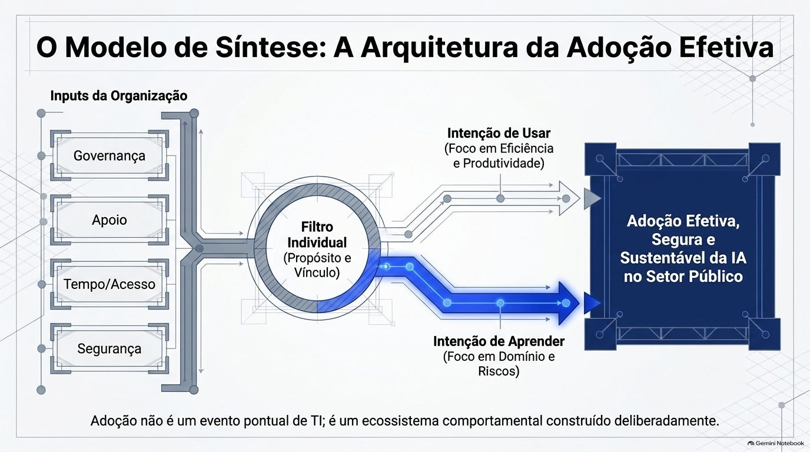
A síntese sustenta um modelo em que a intenção de aprender e usar IA depende de condições organizacionais (apoio de chefias e colegas, tempo protegido, acesso a ferramentas e cursos, segurança para experimentar e clareza das regras), de fatores individuais recorrentes (utilidade percebida e confiança) e, como variáveis secundárias, do propósito e do vínculo.
Hipóteses candidatas, a testar com servidores do Executivo de Goiás: (H1) o apoio da chefia e dos colegas se associa positivamente à intenção de aprender IA; (H2) o tempo protegido se associa positivamente e a carga de trabalho percebida, negativamente; (H3) o acesso a ferramentas autorizadas e a cursos ligados às tarefas se associa positivamente; (H4) a segurança para experimentar se associa positivamente; (H5) a clareza das regras se associa positivamente; (H6) o propósito e o tipo de vínculo moderam essas relações, de forma exploratória.
As direções de H2 e H4 se apoiam em poucos estudos e devem ser tratadas como exploratórias.
A motivação para o serviço público aparece em poucos estudos e em papel secundário: reforçou o efeito da liderança digital sobre o desempenho proativo (Song et al., 2026), teve efeito intrínseco maior que o extrínseco sobre o desempenho percebido com IA generativa (Choi et al., 2025) e associou-se ao empoderamento no trabalho com IA (Noor et al., 2026). Nenhum desses estudos tem a intenção de usar ou aprender como desfecho principal.
Nenhum resumo lido distingue servidores efetivos, comissionados e temporários. As variáveis funcionais que aparecem são cargo de gestão, tempo de serviço e idade (Daueshova et al., 2026), e a natureza pública ou privada do empregador (Revillod, 2025). A literatura geral sobre estabilidade sugere que ela não define a motivação (Machado et al., 2021; Espínola e Cruz, 2022).
A motivação para o serviço público mede uma disposição geral e não deve ser lida como justificativa para sobrecarga de trabalho.
Na busca exploratória, dois registros têm foco no Brasil. Lima et al. (2026) estudaram modelos de treinamento adaptativo com IA para servidores municipais de Santa Catarina, com entrevistas e escala Likert, e apontam necessidades como aproximar teoria e prática e dar apoio depois do treinamento. Costa et al. (2026) estudaram servidores da Receita Federal diante de um novo sistema, sem foco em IA.
Lacunas: quase não há estudos com a intenção de aprender IA como desfecho; o tempo protegido aparece como item de barreira, e não como fator medido; a segurança psicológica quase não é medida; o vínculo não é distinguido; o propósito aparece como moderador, e não como fator da intenção; predominam estudos transversais de países asiáticos e europeus; e a produção brasileira é mínima, o que ainda depende da busca em SciELO, Spell e BDTD.
Limitações e próximos passos
O que a síntese preliminar permite afirmar, e o que ainda depende de leitura e de novas buscas.
Dos 50 estudos da síntese, 13 foram lidos em texto completo e 37 foram extraídos de resumos. A direção das associações e as amostras desses 37 devem ser conferidas nos artigos, e dez registros sem resumo ficaram pendentes.
A busca recuperou, em sete das oito consultas, só os 40 primeiros resultados, e a plataforma ordena e sintetiza por IA, de modo que os resultados não são plenamente reprodutíveis. Os metadados foram incompletos e a cobertura de periódicos brasileiros é incerta.
A revisão de escopo não estima efeitos nem avalia a qualidade dos estudos. O recorte de idiomas e de período (2018 em diante) exclui outros trabalhos.
Pesquisar as demais bases, ler os textos completos, concluir a extração com conferência por um segundo revisor, registrar o protocolo e atualizar os resultados.
Em seguida, desenhar o estudo empírico com servidores do Executivo de Goiás, com questionário anônimo, que meça a intenção de aprender separada da de usar e inclua tempo, segurança para experimentar, propósito e vínculo. Ele depende de aprovação do comitê de ética e de adaptação dos instrumentos validados no Brasil.
Do mapa à prática
O que o mapa sugere para quem forma servidores.
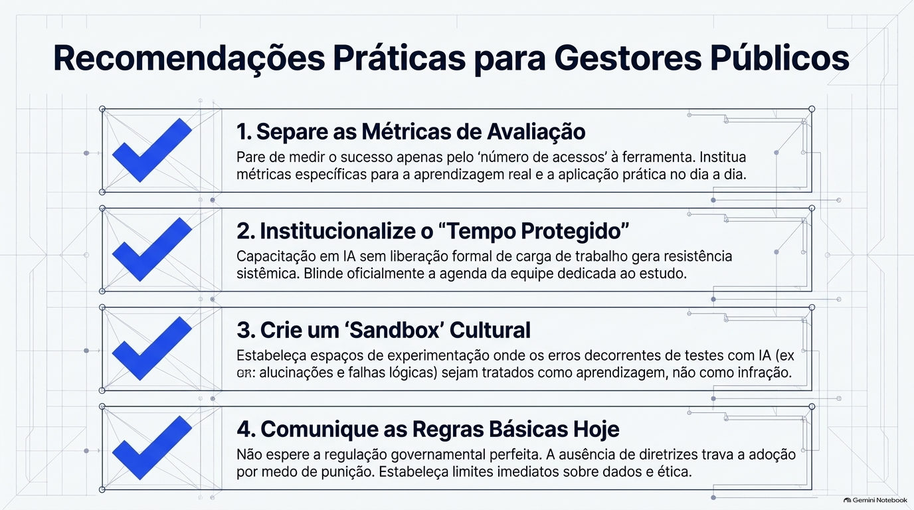
Oferecer cursos e ferramentas é condição necessária, mas não suficiente. Apoio de chefias, tempo e regras claras merecem o mesmo cuidado, e vale medir a aprendizagem e a intenção de aprender separadamente do acesso e do uso.
As quatro recomendações da imagem são propostas do autor a partir do mapa da literatura. Elas não foram testadas.
A síntese
A adoção de IA no serviço público depende de condições organizacionais que a instituição pode alterar. O mapa preliminar indica o que a literatura já mostra e onde ela é silenciosa, em especial sobre a intenção de aprender, o tempo protegido, a segurança para experimentar, o vínculo e a produção brasileira.
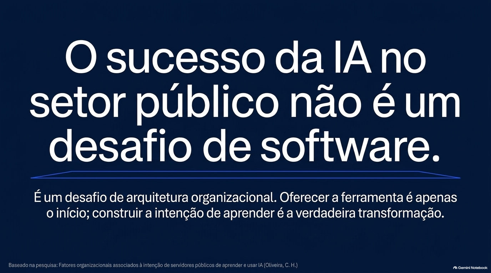
Oferecer a ferramenta é apenas o início; construir a intenção de aprender é a verdadeira transformação.